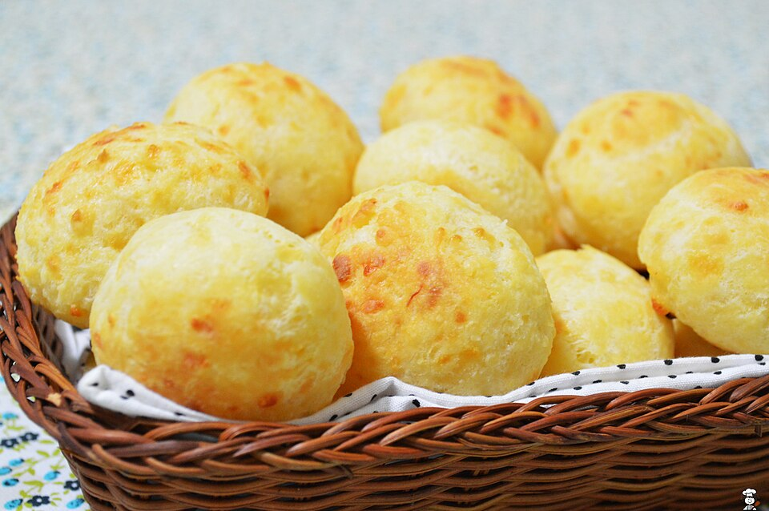

Salgados · Petiscos
Pão de queijo

Ingredientes
- 500 g de polvilho doce
- 1 copo pequeno de óleo
- 4 ovos
- ½ copo de água
- ½ copo de leite
- 200 g de queijo ralado
Modo de preparo
- Escalde o polvilho com o óleo, a água e o leite (líquidos quentes).
- Deixe esfriar, junte os ovos e o queijo; amasse bem.
- Faça bolinhas; congele ou asse cerca de 20 minutos.
Observação
Receita manuscrita. Asse em forno médio preaquecido (~180–200 °C) até dourar.